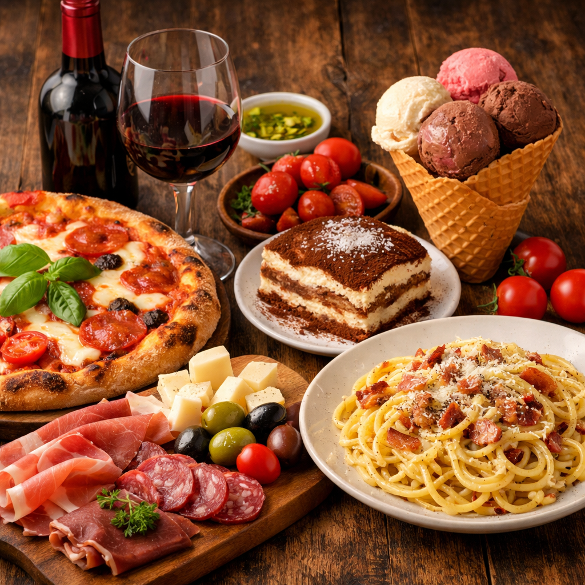
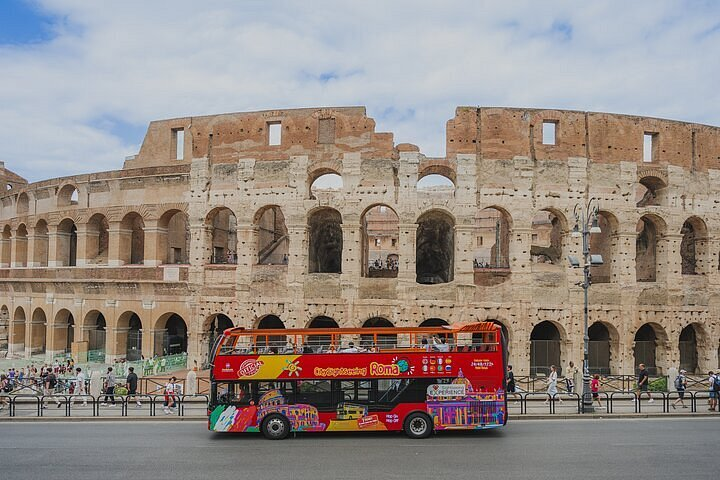

Italy Travel
Explore Rome, Food & Culture
Explore Rome, Food & Culture

The Colosseum is one of Rome's most iconic landmarks and one of the Seven Wonders of the Ancient World. Built in 80 AD, it was the largest amphitheater in ancient Rome. Construction of the Colosseum began during the Roman Empire under Emperor Vespasian and was completed by his son. It was used for: Gladiator duels, animal fights, and public entertainment performances.

Magnificent architecture, over 2000 years old and still well-preserved, representing the engineering technology of ancient Rome. Immersive historical experience: Stepping into the arena feels like stepping back into ancient Rome. The underground passages (gladiator preparation area) can be visited. Enchanting night view: Even more magnificent under the night lights, perfect for taking photos.

When you're near the Colosseum, be sure to try these:
🍕 Italian Thin-crust Pizza : Traditionally wood-fired, crispy on the outside and soft on the inside.
🍝 Carbonara : A classic Roman dish (eggs, cheese, and bacon).
🍨 Gelato : Richer and smoother than regular ice cream.
🍷 Perfect with a glass of Italian red wine.

📍 Getting to the Colosseum is very convenient: 🚇 Metro (Highly Recommended) Take the Rome Metro Line B Get off at Colosseo station, it's a 1-minute walk. 🚌 Bus Multiple routes are available (e.g., 75, 81, 175) 🚶 Walking It's within walking distance of the Roman Forum.